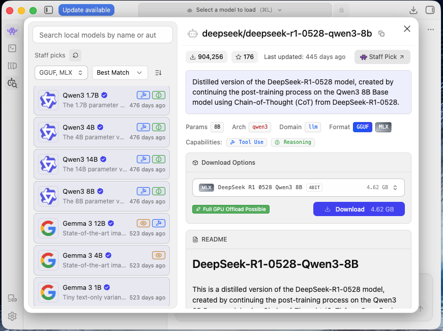
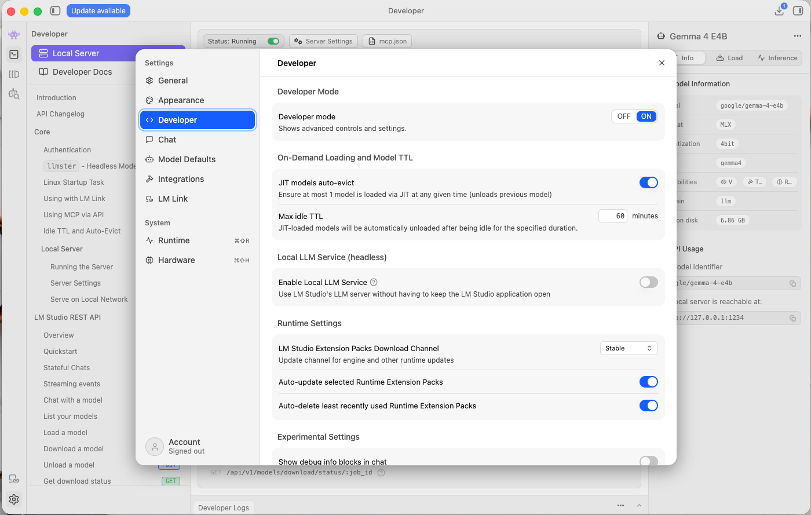
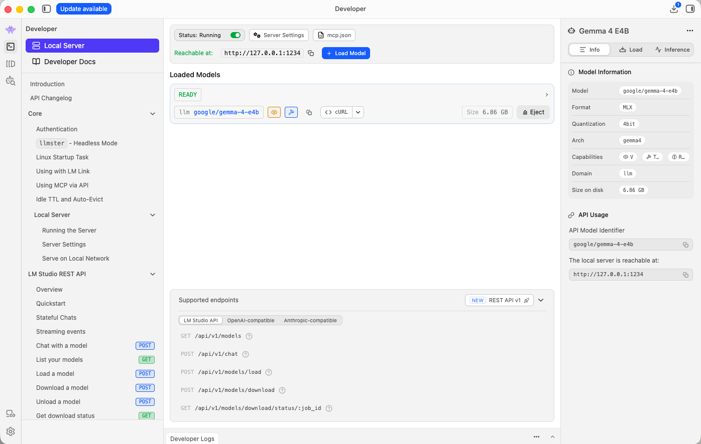

AI Models & API Key Pool
Thêm một hoặc nhiều API Key. Tiện ích tự động cân bằng tải và chuyển sang key dự phòng khi gặp giới hạn Rate Limit.
Chọn cách bạn muốn AI hoạt động
Bạn có thể dùng bất kỳ cách nào dưới đây — kết hợp nhiều cách hoặc chỉ chọn 1:
Chiến lược Định tuyến AI (AI Routing Strategy)
Chọn cách tiện ích ưu tiên phân luồng giữa mô hình On-Device Gemini Nano và các API đám mây đã cấu hình.
Chế độ Suy luận (Thinking)
Một số model tự động "suy nghĩ" trước khi trả lời — chính xác hơn nhưng chậm hơn. Tắt để ưu tiên tốc độ; chỉ áp dụng cho model có hỗ trợ, các model khác không bị ảnh hưởng.
Cơ chế xoay vòng thông minh (Smart Load Balancing & Fallback)
Hệ thống tự động phân phối đều câu hỏi qua các key đang hoạt động (Round-Robin). Nếu 1 key gặp lỗi Rate Limit (HTTP 429) hoặc tạm quá tải, hệ thống tự động đưa key đó vào hàng chờ nghỉ 60 giây và ngay lập tức chuyển sang Key kế tiếp mà không làm gián đoạn câu trả lời.
Chrome Built-in AI (Gemini Nano Local On-Device)
Đang kiểm tra...Mô hình AI nội bộ chạy 100% trên thiết bị của bạn. Không cần API Key, hoàn toàn miễn phí & hoạt động Offline. Tiện ích tự động sử dụng model này khi chưa có Key nào được thêm hoặc khi tất cả các Key đám mây bị cạn hạn ngạch (Rate Limit).
- Bước 1: Mở cờ → Chọn Enabled (hoặc Enabled Multilingual).
- Bước 2 (Bắt buộc): Mở cờ → Chọn Enabled BypassPerfRequirement.
- Bước 3: Nhấn nút Relaunch ở góc dưới màn hình để khởi động lại Chrome.
- Bước 4 (Tải model): Mở → Tìm mục Optimization Guide On Device Model và nhấn Check for update cho đến khi báo Up-to-date.
- Bước 5: Nhấn nút "Kiểm tra Model Nội bộ" ở trên để hoàn tất.
Hướng dẫn cài đặt Local Model (Ollama / LM Studio)
Chạy model AI hoàn toàn miễn phí, offline, ngay trên máy tính của bạn — không cần API Key, không giới hạn số lượt hỏi.
-
Vào tab Discover (biểu tượng kính lúp), tìm và tải về 1 model bạn muốn dùng (định dạng GGUF).

-
Nếu không thấy tab Local Server / Developer (biểu tượng </>) trên thanh bên, vào Settings → Developer để bật Developer Mode trước (các bản LM Studio mới gộp chung Power User + Developer vào 1 mục này).

-
Vào tab Local Server / Developer (server tự chạy ở trạng thái Status: Running). Nhấn nút + Load Model ở góc trên bên phải, chọn model bạn đã tải ở bước trên rồi đợi model nạp xong — model sẽ hiện READY trong mục Loaded Models. Server mặc định chạy tại
http://127.0.0.1:1234.
-
Quay lại tiện ích này, nhấn nút "Thêm Local Model" ở trên → chọn tab LM Studio → nhấn Kiểm tra kết nối → tick chọn model đang chạy → nhấn Thêm model đã chọn.
-
Ảnh minh họa: Trang tải Ollama
-
Mở Terminal / Command Prompt, chạy lệnh
ollama pull llama3.3(hoặc tên model bất kỳ) để tải model về máy.Ảnh minh họa: Lệnh ollama pull -
Ollama tự động chạy server nền tại
http://127.0.0.1:11434. Mở link này trên trình duyệt, thấy dòng chữ "Ollama is running" là đã thành công.Ảnh minh họa: Ollama is running -
Quay lại tiện ích này, nhấn nút "Thêm Local Model" ở trên → chọn tab Ollama → nhấn Kiểm tra kết nối → tick chọn model vừa tải → nhấn Thêm model đã chọn.Ảnh minh họa: Thêm Local Model trong tiện ích
Quản lý Model OCR Cục bộ (Offline Vision Engine)
Bộ máy nhận diện văn bản & công thức toán học WebAssembly chạy 100% trên trình duyệt. Tự động kết hợp ngôn ngữ và ký hiệu Toán học để trích xuất đề bài đưa vào Gemini Nano.
Tính năng này dùng để làm gì?
OCR cục bộ chỉ được dùng làm phương án dự phòng khi bạn chưa cấu hình bất kỳ AI Model nào ở tab "AI Providers & Keys" (kể cả Local Model qua Ollama/LM Studio). Lúc đó, ảnh chụp bài tập sẽ được trích xuất thành chữ ngay trên trình duyệt để đưa cho Gemini Nano (chỉ đọc được văn bản, không đọc được ảnh) xử lý tiếp.
Lưu ý: độ chính xác của OCR cục bộ không thể tốt bằng việc để AI đọc thẳng ảnh (Gemini, GPT-4o, Claude, hoặc model Vision qua Ollama/LM Studio) — nhất là với công thức phức tạp, ảnh mờ hoặc chữ viết tay. Nếu muốn kết quả chính xác nhất, hãy ưu tiên cấu hình 1 trong các model đó thay vì chỉ dựa vào OCR.
Gói Cốt Lõi Sẵn Sàng (Core Offline Pack)
Tích hợp sẵn v1.0.0Bao gồm: Tiếng Việt (1.9 MB), Tiếng Anh & Latin (4.1 MB), Ký hiệu Toán học & Công thức (2.3 MB). Sẵn sàng nhận diện ảnh đề thi và trắc nghiệm ngay mà không cần tải thêm.
Danh sách Toàn bộ Model Ngôn ngữ Quốc tế
Lưu trữ an toàn trong IndexedDB OfflineLiquid Glass UI & Live Preview
Customize Liquid Glass effects, colors, blur, opacity, and size with real-time Live Preview.
Giao diện Overlay
Floating Action Buttons (FAB)
Selection Toolbar
Dịch nhanh khi di chuột
Homework Helper Popup
Calculus & Linear Algebra Problem
Find the derivative of $f(x) = \int_{0}^{x^2} \sin(t^2) dt$ with respect to $x$.
According to Leibniz Integral Rule, we differentiate the upper limit...
Hướng dẫn Lấy API Key & Cơ chế Xoay Vòng
Giải thích chi tiết về lợi ích của việc cấu hình nhiều API Key và cách lấy API Key từ các nhà cung cấp.
Tại sao nên thêm nhiều API Key?
- Tránh giới hạn Rate Limit: Các nhà cung cấp thường giới hạn số request/phút (RPM) hoặc số token/ngày cho mỗi tài khoản. Thêm nhiều key giúp bạn hỏi liên tục không lo bị nghẽn.
- Hoạt động bền bỉ 24/7: Nếu một key tạm thời hết quota hoặc bị lỗi mạng, extension sẽ tự động chuyển sang key khác trong tích tắc.
- Kết hợp nhiều model: Bạn có thể thêm key từ nhiều nhà cung cấp khác nhau (Gemini, OpenAI, DeepSeek, Claude...) — mỗi nơi có thế mạnh riêng, giúp câu trả lời đa dạng và ổn định hơn.
Cơ chế hoạt động như thế nào?
- Mỗi khi bạn chụp ảnh bài toán hoặc hỏi AI, extension sẽ chọn key kế tiếp trong danh sách đang bật.
- Nếu nhà cung cấp phản hồi lỗi 429 (Too Many Requests / Quota Exceeded), key đó sẽ được tạm nghỉ 60 giây và request được tự động chuyển ngay sang key kế tiếp.
- Toàn bộ diễn ra trực tiếp trên trình duyệt của bạn (Zero-Login), không lưu trữ hay gửi key qua máy chủ trung gian nào.
Địa chỉ lấy API Key chính thức
System Prompt & Phong cách Sư phạm
Tùy chỉnh hướng dẫn hệ thống riêng biệt cho các mô hình Cloud lớn và mô hình On-Device cục bộ.
1. System Prompt cho Cloud Models (Gemini, OpenAI, Claude, DeepSeek)
Dành cho các mô hình đám mây lớn (hàng trăm tỷ tham số), hỗ trợ phân tích sư phạm chuyên sâu, LaTeX và hình ảnh.
2. System Prompt cho Chrome Gemini Nano (On-Device Local AI)
Dành riêng cho mô hình nén chạy cục bộ trong Chrome (~3B tham số). Tinh gọn, ưu tiên xác thực dữ kiện thực tế trước khi chọn đáp án.
Cài đặt Chung & Ngôn ngữ
Manage UI language, AI response language, form detection, and data backup.
Language Settings
Disabled Websites List
Các tên miền bạn đã chọn "Disable for this website" từ menu toolbar.
Backup & Data Management
Xuất cấu hình các key ra file JSON để chuyển sang máy khác hoặc xóa lịch sử chat.
About & Tags
Homework Helper - Trợ lý giải bài tập và ôn luyện học tập thông minh. Hỗ trợ AI cục bộ Chrome Gemini Nano Offline, xoay vòng đa mô hình AI (Gemini 2.5 Flash, GPT-4o, Claude 3.5 Sonnet, DeepSeek R1, Groq Llama 3.3), chụp ảnh OCR quét đề bài, giải toán từng bước với công thức KaTeX, thanh công cụ bôi đen văn bản và hỗ trợ làm trắc nghiệm Google Forms.